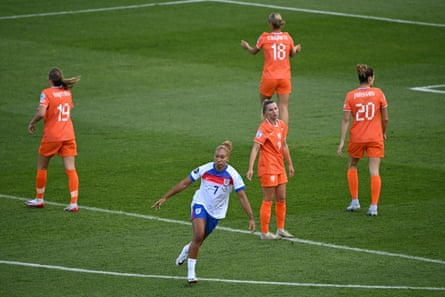
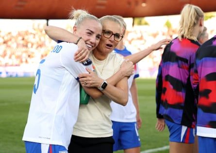

England are back on track. They really needed that display against the Netherlands and it was a pivotal moment for them. It was a very, very commanding performance.
Physically, they showed their dominance and exposed the Netherlands’ weaknesses at the back. With Lauren James, in what I think is her best position, playing from the right and being able to drift in, you can maintain your midfield structure. Her performance showed why Sarina Wiegman has selected her and the team performance showed why she stuck with the group that she did.
I want to give a special mention to Ella Toone, coming into the side. Tooney seems like she is in the most confident place she has ever been in. She seems ready to perform at the highest level, which bodes well for England. For me the standout performer is always Alessia Russo, with the way she connects, links up and is a constant threat. In addition she’s also a provider of goals for others. All in all that team performance has really reminded England of their levels they are capable of – and they know they have to sustain it.
Now, with so many decisive matches on the horizon in the next few days, every team in this tournament will need to do everything they can to maintain harmony within their bubbles and recognise when individuals need a mental breather for a morning coffee or who needs an arm around their shoulder, and these are the times where your senior leaders step up.
What I’ve learnt over the years is that if you get a bit of time off while you’re away with the team for so long, you must take it. You need to know how to top your own tank up and, when your tank starts to empty, it’s your responsibility to keep it full. Nobody else is going to do that for you, you have to do that for yourself. If I get a morning off, I like to go shopping, or if I’m in a new town I like to go sightseeing. I want memorable experiences.
Sometimes I’ll go to a museum or get my nails done, but it always involves walking, I love walking. Or sometimes it’s about watching a film. Some others will simply want to go for a coffee or maybe they will want to spend their time with family if they can.
Lauren James was playing in her best position, drifting in from the right.Photograph: Annegret Hilse/Reuters
As coach you have to remember that everyone has their own different routines and that they are adults. I like to treat them like adults. Any player returning from international duty will tell you, the worst environments are the ones that create cabin fever, where you have to do everything together all the time, that’s when it can drive players mad. If you, figuratively speaking, strangle players during a tournament, that can have such a negative impact on performances. So I’m not a fan of seating plans or precisely fixed times when you all have to sit down for a meal.
Then there’s social media. When you are away together as a group for a long time, if you’re too active on social media, it can have such a detrimental impact on the psyche for players and I strongly encourage a detox, for everybody, during that period where they – in an ideal world – have no interactions with social media for a month, and really lock in for a once-in-a-lifetime opportunity to try to win something like a major tournament.
I’ve seen what happens when players do look at social media too much during an intense period, and I don’t think it improves their position at all. On the plus side, though, those who have a healthy boundary with it during tournaments are usually the ones who perform. England had such a high after the Euros, and since then they’ll have had to deal with some of the negativity which comes with that growth. That is not fun and unfortunately some players will look at it, so I’d say the most important thing is to keep emphasising the importance of that “bubble”.
That’s where the work of the senior leaders in a team, behind the scenes, is so important. We all have a tendency to just focus on form on the field. Part of what you need in challenging times is senior players, while the support staff and the psychologists come into play too. We have seen this week how well the Lionesses have responded.
Sarina Wiegman’s team selection was vindicated against the Netherlands.Photograph: Florencia Tan Jun/Uefa/Getty Images
When we talk about bubbles, it’s about locking down, protecting everyone’s confidence, and not playing anything out in the public eye, so that nothing damages the team. Do things that don’t create any stress, keep it calm and keep it relaxed, because having 40 days together with the same people can be so intense. Naturally, you can irritate each other, but you also can be the best of friends. The key to it is consistency every day, because you’re going to lose games of football and you’re going to not play well occasionally. But are you set up to be able to cope with it? That’s always the burning question I have. In England’s case, Sarina has got a lot of experience of doing this and will be calm.
Somebody once advised me: “Don’t listen to someone you wouldn’t take advice from.” People think they know what’s going on inside a team, without really knowing, and everyone has got an opinion. So as a coach, it’s lovely to just focus only on your team and not listen to others. Yes, you have press officers who will fill you in on what’s being said, but during my experience at the Olympics with the US, I had to think: “I may never have this experience again,” so I wanted us to make the most of it.
You have to give everything you can to be the best you can be to perform every day. In this tournament, Spain, Germany and France all caught the eye too, and the reigning world champions look like the top team so far. For France, it was always a matter of not “if”, but “when” we would see them look strong. But can they do it for every game in the tournament? That remains to be seen. There are some fantastic teams in this tournament and the ones who get the bubble right will usually be the ones who succeed.